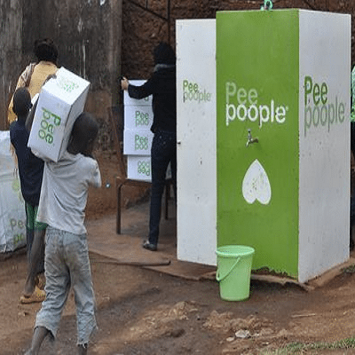
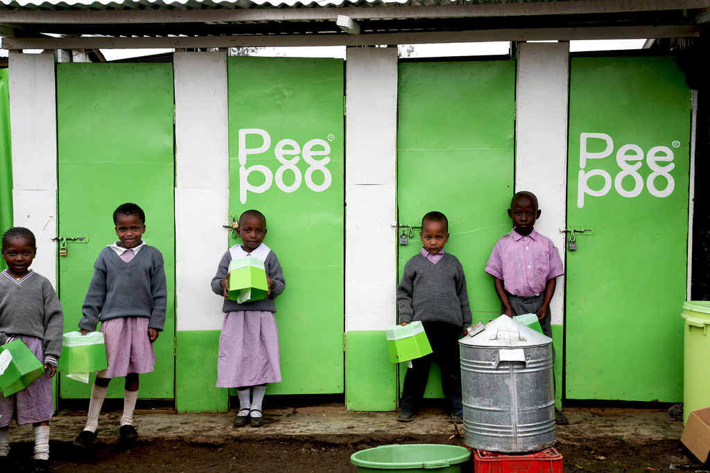

Understanding Failure in Social Innovation
How Peepoople developed a promising sanitation product and introduced it in Kibera, Kenya but struggled to turn it into a financially sustainable, scalable and institutionally supported system.
Follow the story01 - The Problem

Photo: Engineering for Change (2024)
Peepoople introduced its sanitation system in Kibera, an informal settlement in Nairobi, Kenya where access to safe and affordable sanitation presented serious challenges.
A 2009 study in Silanga Village found that more than half of the people surveyed reported disposing of human waste using a "flying toilet". The same study also found that approximately 40% of respondents lived on less than one U.S. dollar per day.
(Ondieki & Mbegera, 2009)
02 - The Innovation
The Peepoo was a single use biodegradable toilet bag containing urea. After use, the urea helped create conditions that kill harmful pathogens in the waste. This allows the sanitized material to potentially be reused as fertilizer.
(Vinneras et al., 2009)
The Peepoo functions as a private single-use toilet.
The bag is tied after use.
The used bag is taken to a collection point.
Urea helps neutralize pathogens over time.
The treated waste can potentially become fertilizer.
03 — Early Promise
of surveyed users strongly recommended Peepoo.
felt that the Peepoo bag was safe and clean to use.
said they would consider using the Peepoo bag for everyday use.
More than 80% of respondents believed that the Peepoo bag should cost less than five Kenyan shillings for it to be affordable to most people. Over 60% also suggested that the bag should be larger.
(Ondieki & Mbegera, 2009)
04 — Defining the Failure
The product was only one part of the innovation.
The Peepoo demonstrated technical potential and was accepted by many users. However, Peepoople struggled to turn the product into a system that could make enough money, be scalable and receive long term support from organizations and funders.
(Fischer, Kokko, & McConville, 2021)
05 — Why It Failed
Click each factor below to explore how it contributed to the failure.
Peepoos were sold to households in Kibera for approximately three Kenyan shillings per bag.
However, this price covered only around 7% of the total cost of the bag.
Household sales reached only about 1,000 individual users at their peak.
(Fischer et al., 2021)
Risk making sanitation unaffordable.
Fail to recover operating costs.
Peepoople gained support in the community through demonstrations, hygiene education, street theatre, local elders and trusted community figures.
However, it struggled to gain the same level of trust and support from development organizations and funders.
(Fischer et al., 2021)
The product gained stronger support from users.
Peepoople struggled to gain the same support from larger organizations and funders.
Peepoople invested heavily in automated production and prepared for very large-scale expansion before demand and financing had become sustainable.
Approximate cost of the automated production machine.
Potential Peepoos produced per day.
(Graf, Kayser, & Brossard, 2014)
Peepoople's full model depended on multiple parts working together.
Research found that local user acceptance was not enough to create lasting system-level change.
(Kokko & Fischer, 2021)
06 — Two Models, Two Outcomes

At its peak, more than 17,000 children had access to Peepoo sanitation through participating schools.
Photo: Owino (2018), Talk AfricaResidents pay
↓Affordability barrier
↓Limited household sales
↓Insufficient revenue
Donor funding
↓Free access for students
↓Greater participation
↓More than 17,000 children reached
07 — Follow the Failure
08 — Evidence of Failure
09 — A Complicated Failure
Scientific research supported the product's ability to sanitize waste.
Early evaluation found strong positive responses from many users.
More than 17,000 children had access through the school program at its peak.
The product could work. Parts of the service could work. The full system could not be sustained through the original model.
10 — Lessons for My Social Innovation Project
Students saying they like an idea does not necessarily mean they will regularly use it.
Maintenance, rules, cleaning, hours and long-term responsibility matter as much as the design.
Commuter students should shape the idea, but university stakeholders also need to support it.
A smaller prototype can reveal problems before major resources are committed.
11 — Final Takeaway
Social innovation success cannot be judged only by whether a product functions or whether users initially like it.
The Peepoo showed technical promise and received positive feedback from many users. However, problems with affordability, funding, institutional support and fast expansion made the overall model difficult to sustain in the long term.
12 — References
Fischer, K., Kokko, S., & McConville, J. (2021). No legitimacy: A study of private sector sanitation development in the Global South. Environmental Innovation and Societal Transitions, 38, 68–78. https://doi.org/10.1016/j.eist.2020.11.006
Graf, J., Kayser, O., & Brossard, S. (2014). Designing the next generation of sanitation businesses.
Kokko, S., & Fischer, K. (2021). A practice approach to understanding the multilevel dynamics of sanitation innovation. Technology in Society, 64, Article 101522. https://doi.org/10.1016/j.techsoc.2020.101522
Ondieki, T., & Mbegera, M. (2009). Impact assessment report on the PeePoo bag, Silanga Village, Kibera, Nairobi-Kenya.
Vinnerås, B., Hedenkvist, M., Nordin, A., & Wilhelmson, A. (2009). Peepoo bag: self-sanitising single use biodegradable toilet. Water Science and Technology, 59(9), 1743–1749. https://doi.org/10.2166/wst.2009.184